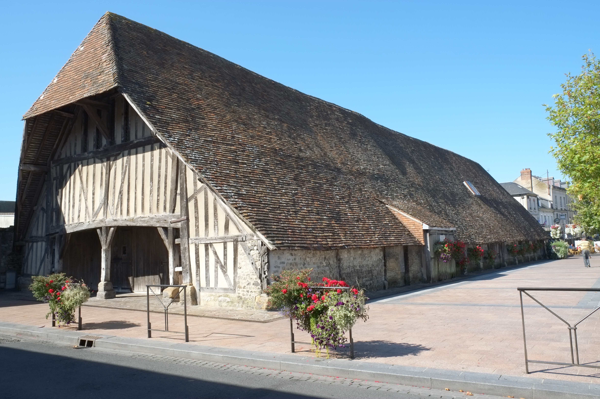
🏛️ Patrimoine
Les halles médiévales
Un monument emblématique du centre-ville, qui accueille encore aujourd’hui le marché.
Entre patrimoine médiéval et esprit portuaire
Présentation
Entre les halles médiévales, le port et les ruelles du centre historique, Dives-sur-Mer possède un charme bien particulier sur la Côte Fleurie.
À ne pas manquer

Un monument emblématique du centre-ville, qui accueille encore aujourd’hui le marché.
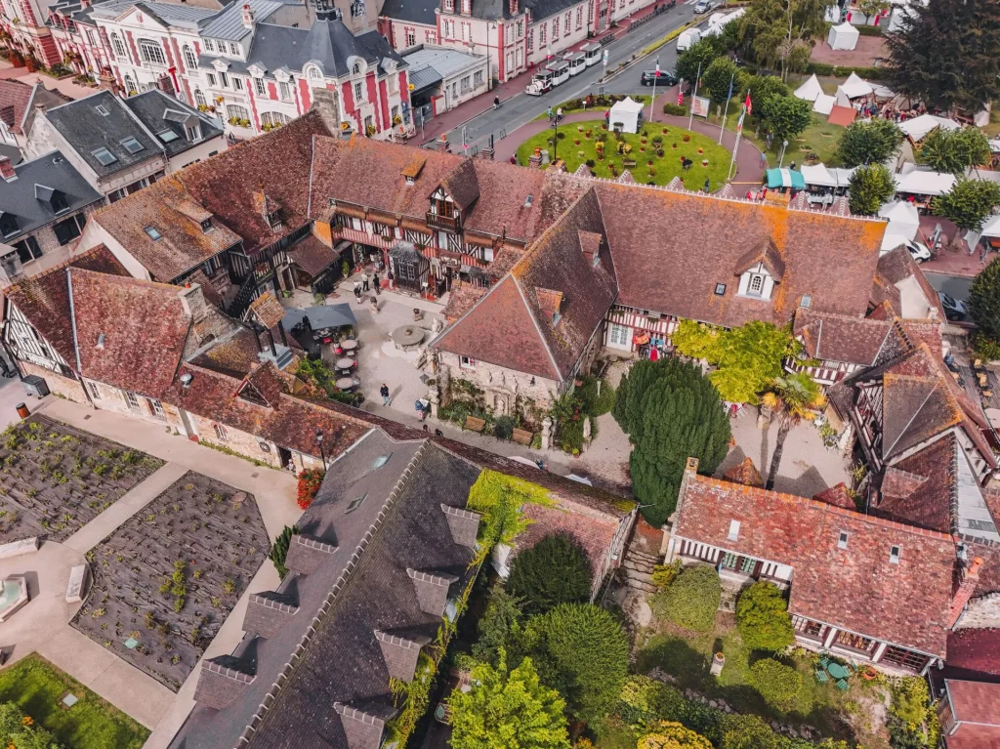
Un ensemble de cours, jardins et boutiques d’artisans installé dans un décor aux influences médiévales et Renaissance.

Une église remarquable où se trouve notamment la célèbre liste des 475 compagnons de Guillaume le Conquérant.
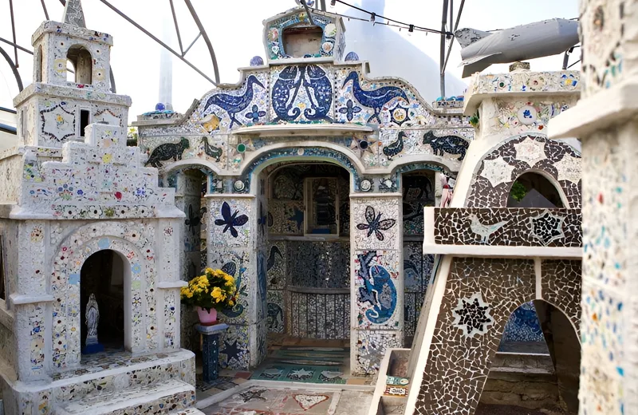
Une étonnante maison entièrement recouverte de mosaïques, créée par l’artiste portugais Euclides Da Costa Ferreira.
Saveurs
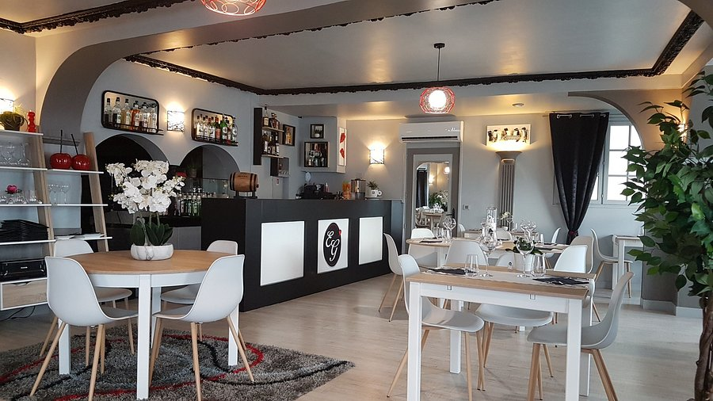
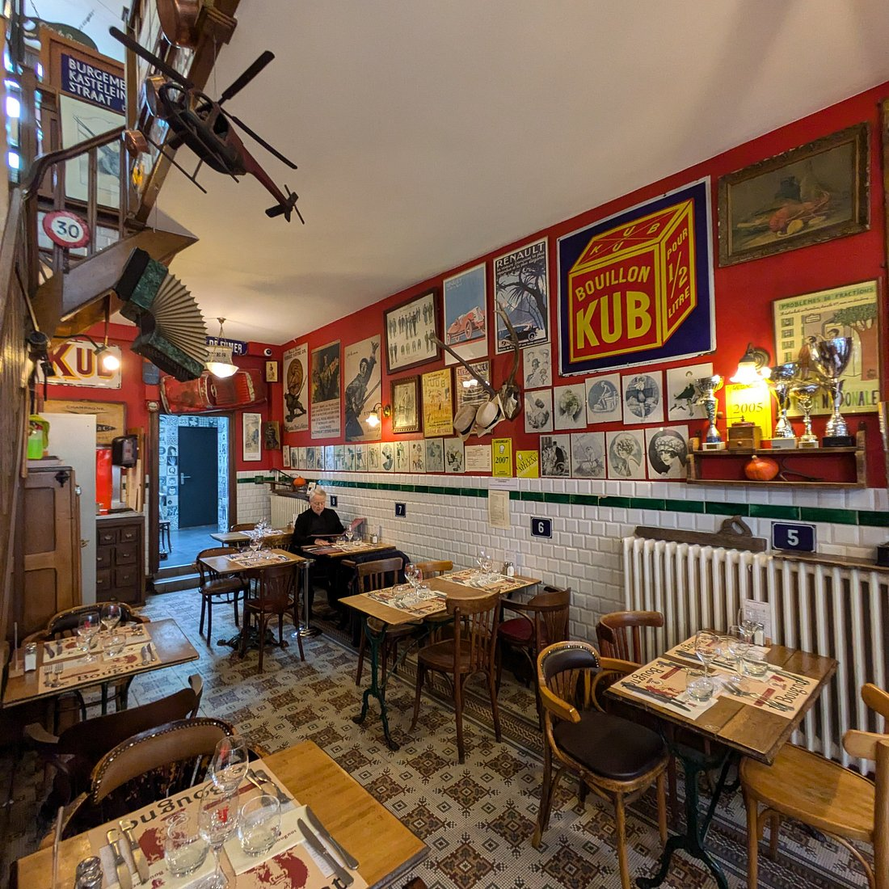
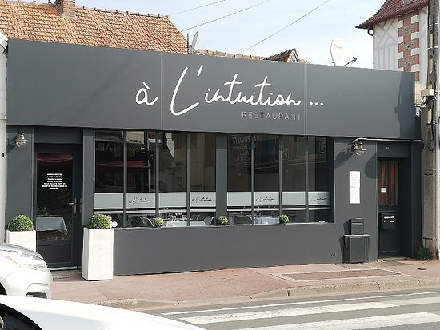
Une cuisine soignée dans une ambiance chaleureuse.
Découvrir l'adresse →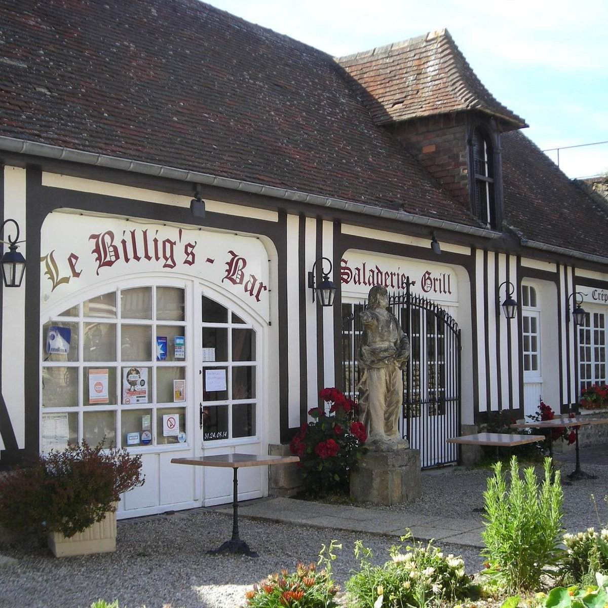
Galettes et crêpes dans le Village Guillaume le Conquérant.
Découvrir l'adresseÀ faire
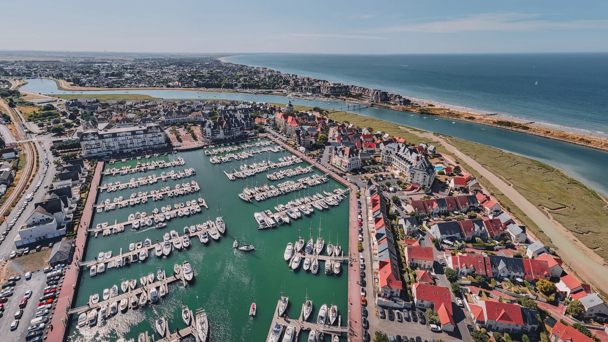
Une agréable promenade entre port de plaisance, bateaux et halle aux poissons.
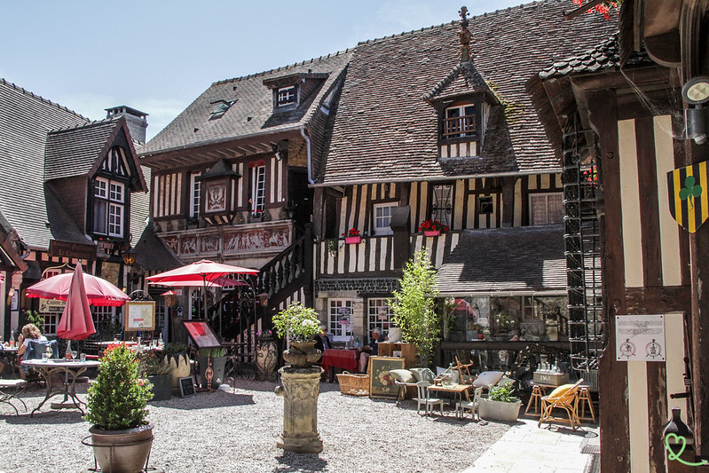
Parcourez les ruelles anciennes à la découverte des maisons à colombages et du patrimoine de Dives.
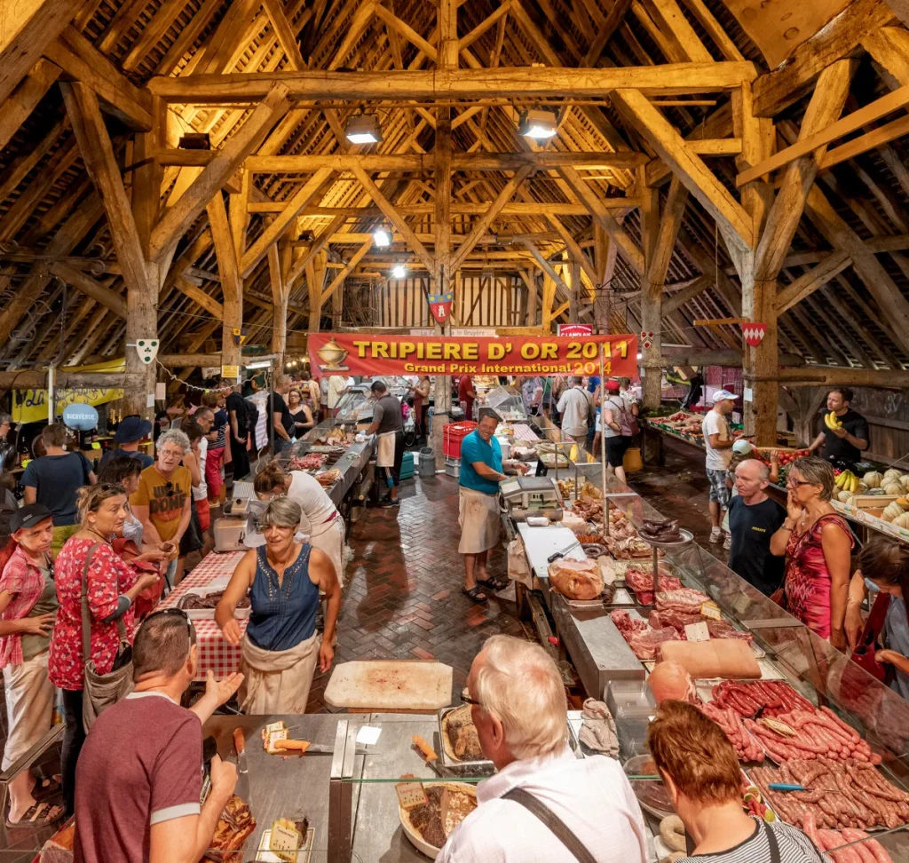
Rendez-vous sous les halles médiévales pour découvrir les produits du terroir, notamment le samedi matin.
Coups de cœur
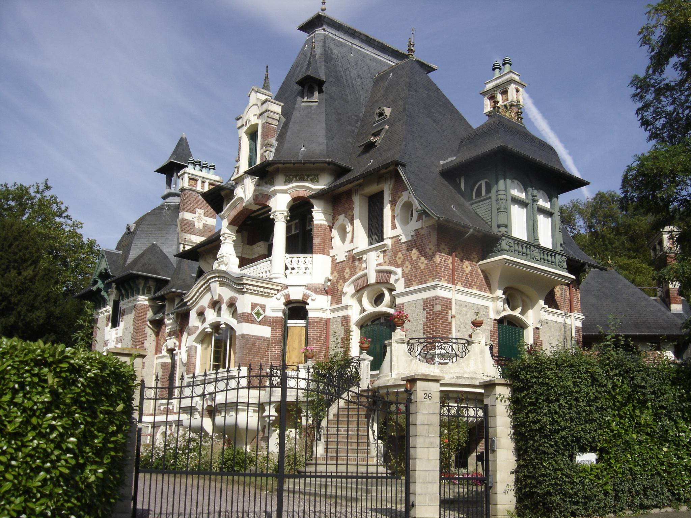
Une élégante villa balnéaire construite entre 1903 et 1908, reconnaissable à son architecture éclectique.
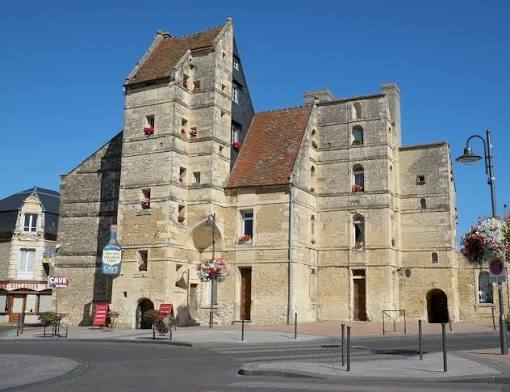
Une imposante demeure en pierre de Caen datant du XVIIᵉ siècle, qui domine la place de la République.
Explorez Cabourg